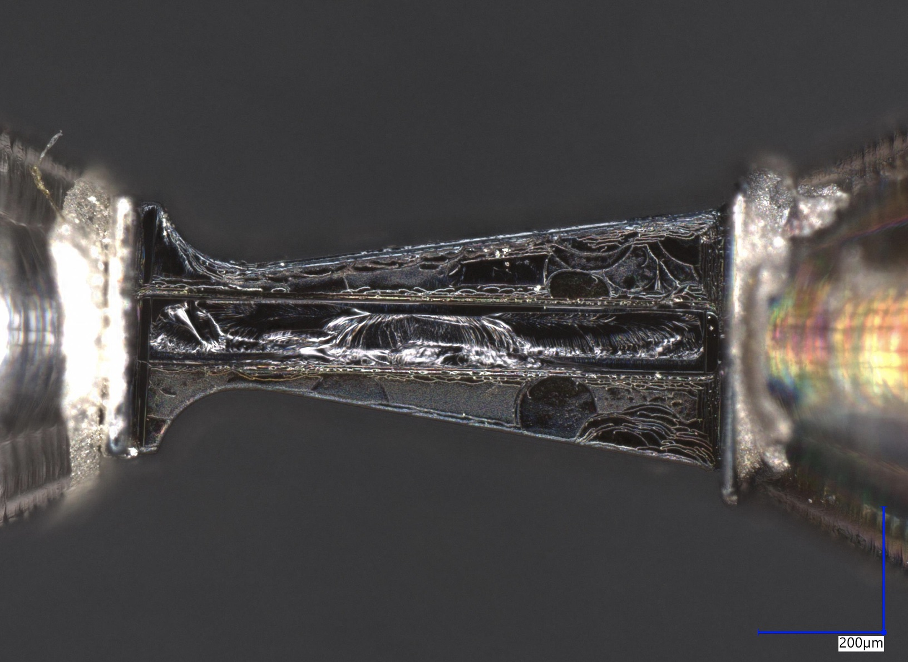
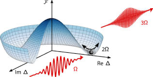
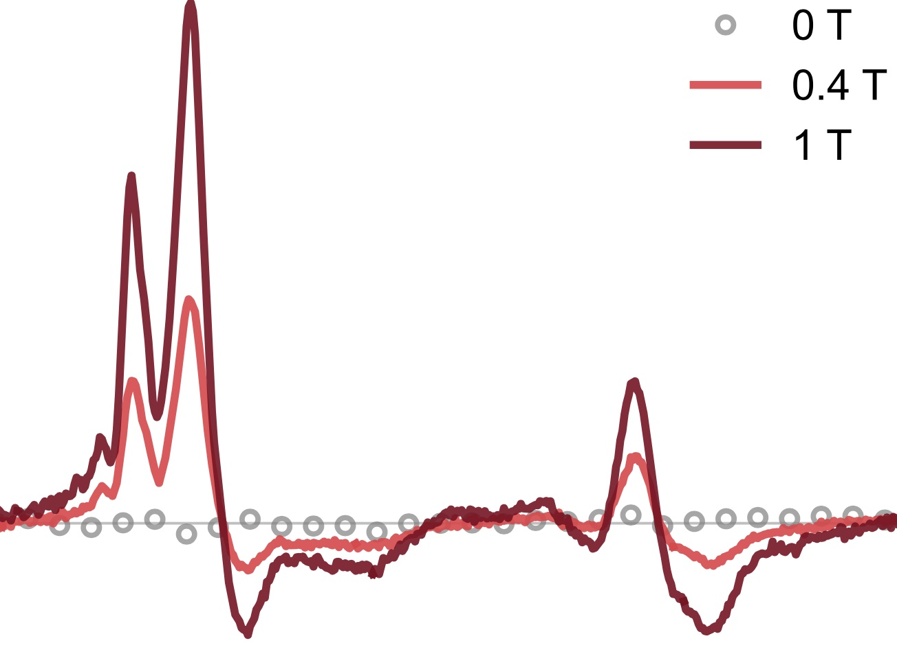

Altermagnetism
Probing the magnetic and electronic structure of altermagnets using RIXS, XMCD, and EXAFS at synchrotron facilities worldwide. With their potential to transform spintronics, I am looking for ways to control altermagnetism and its excitations.

Strain Engineering
Strain is a well-known tuning knob, with epitaxial strain having profound effects on material properties. I am interested in engineering strain gradients and complex strain structures for disorder-free control of material properties — which entails careful structural characterization.

Superconductivity
Studying unconventional superconductors through RIXS and Higgs spectroscopy, using THz FEL sources to directly couple to superconducting amplitude modes. Also investigating nickelate metal-insulator transitions and collective mode dynamics.

Frustrated & 2D Magnets
X-ray spectroscopy of layered magnetic materials including CuCrP₂S₆ and AgCrP₂S₆, as well as THz pump–THz probe, THz-TDS, and THz pump–optical probe studies of geometrically frustrated K₂IrCl₆ in magnetic fields to investigate geometric frustration and optical control of magnetic orders.